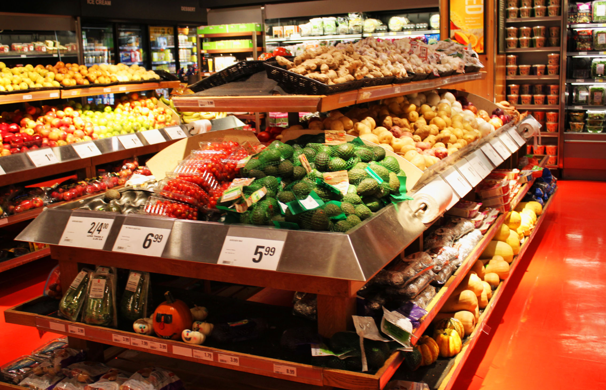

to be maintained at a certain rate or level
avoiding the depletion of natural resources in order to maintain an ecological balance

Eating Green
Be more meat-conscious. You don’t have to completely cut animal products out of your diet, but you should be more conscious of how you consume. It is unrealistic to expect the entirety of humanity to go vegan and a bad idea to kill off the meat industry. Instead you just strive to eat less meat in your everyday life and more greens in its place.
Another way to eat more sustainably is to actually grow your own food. If you can start your own mini edible garden, then you would be able to reduce the amount of resources that are needed to get food to your table. If don’t have much of a green thumb or don’t have the space for a garden, you can instead buy food grown locally. By buying from local farmers, you are also able to reduce the resources used and support local business.

Sustainable Traveling
There are many greener alternatives to driving gasoline cars. These include:
- Cycling
- Walking
- Scooters
- Carpooling
- Public Transit
- Car Sharing
- Electric Motorcycles
- Hybrid or Electic Cars

Reduce, Reuse, Recycle
The first step to more sustainable waste is to use less one-time uses plastic such as plastic water bottles, plastic bag, and saran wrap. Instead, you can uses reusable water bottles, cloth/tote bags for shopping, and reusable containers to store your leftovers.
You could also reduce your trash by only buying what you need or buying multi-use items. The next step is to try to repurpose items that you no longer need or use. If you can’t, then you could sell or donate your item. The final step is to recycle. You should try to buy more items that are recyclable and avoid buying hazardous materials that may be difficult to recycle.